Images from random composition of functions
Below are images generate through random composition of functions with domain and range between -1 and 1.
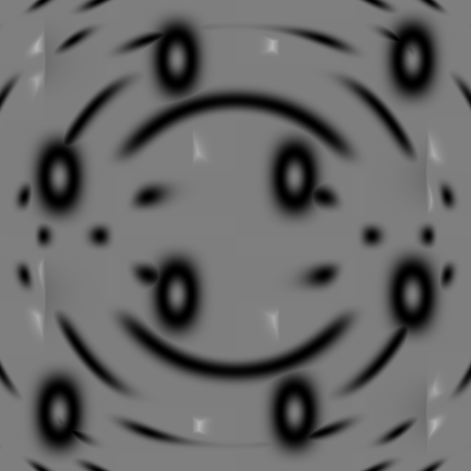
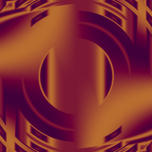 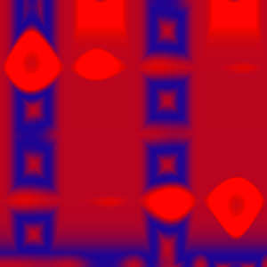 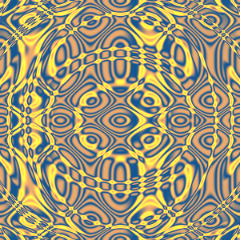 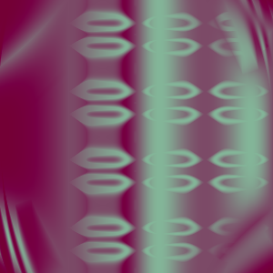
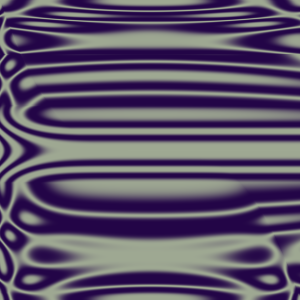 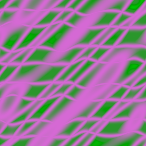 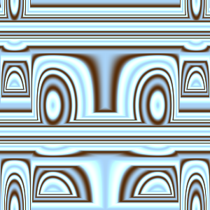 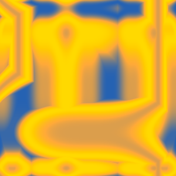 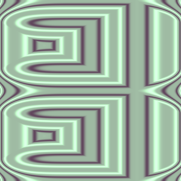 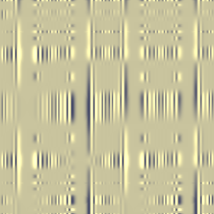 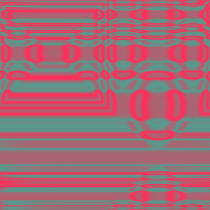 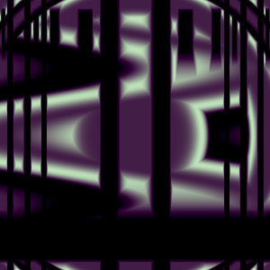 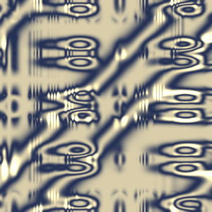 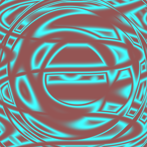
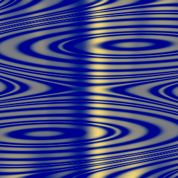 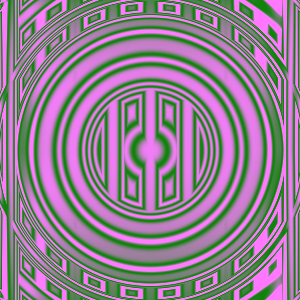 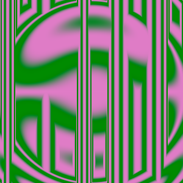 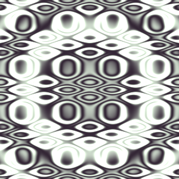 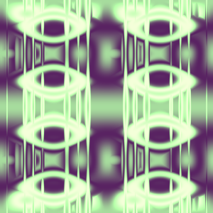 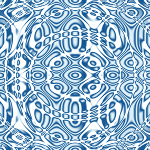


 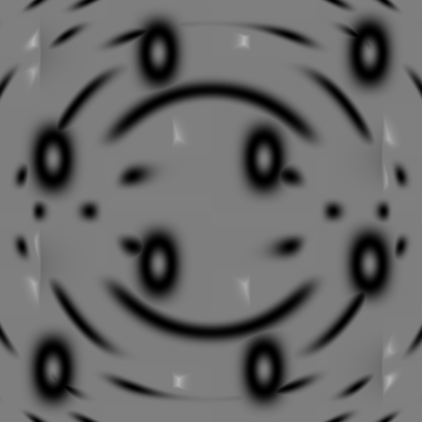
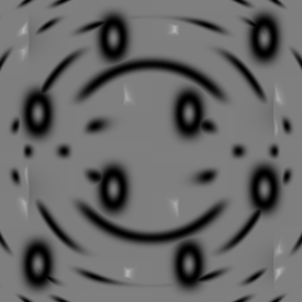
 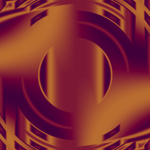
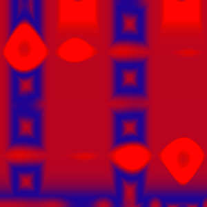
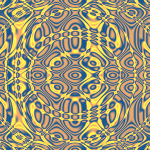
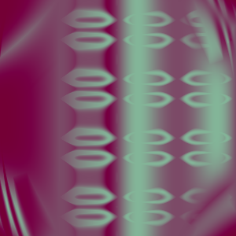
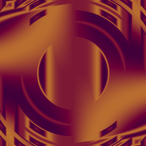
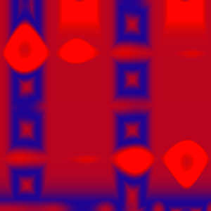
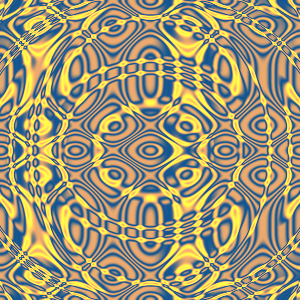
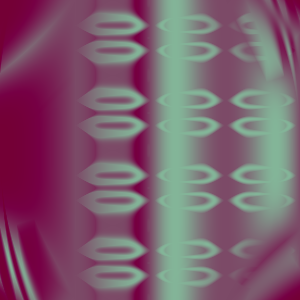
 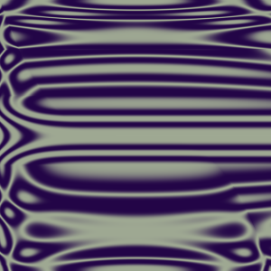
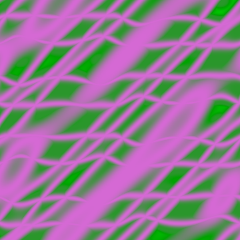
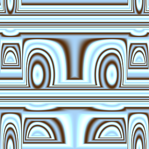
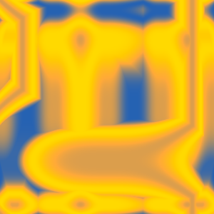
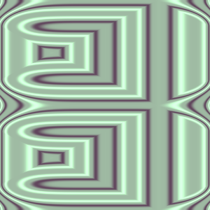
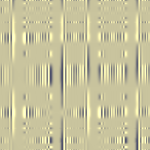
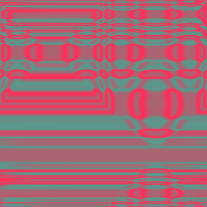
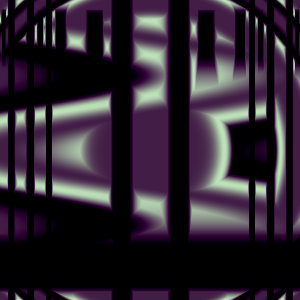
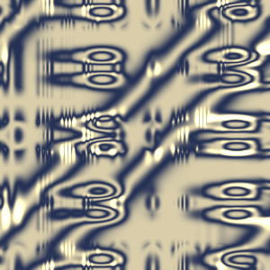
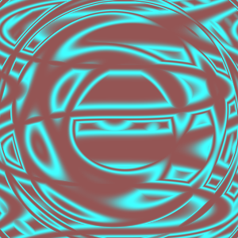
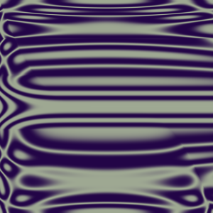
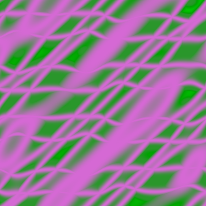
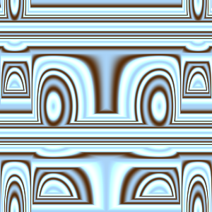
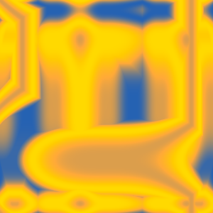
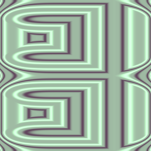
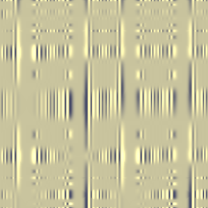
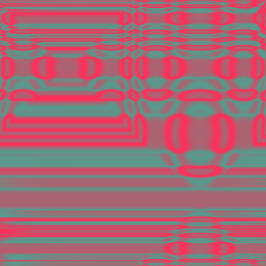
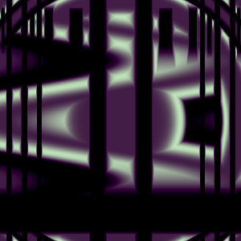
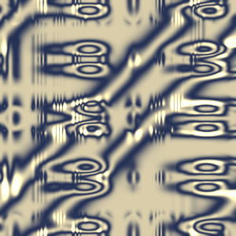
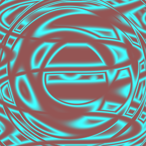
 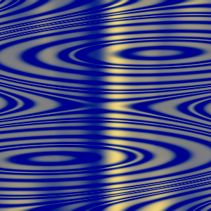
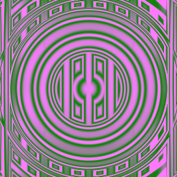
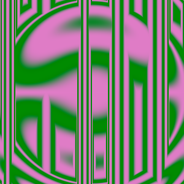
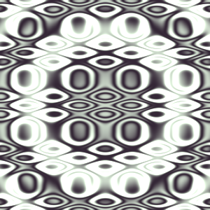
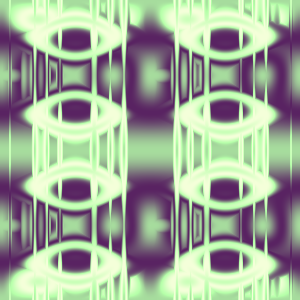
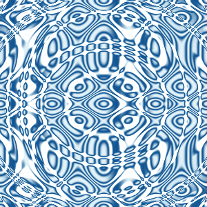
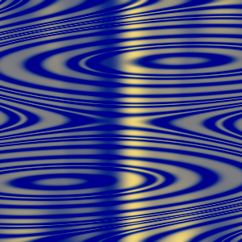
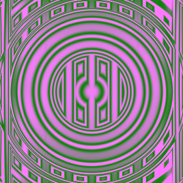
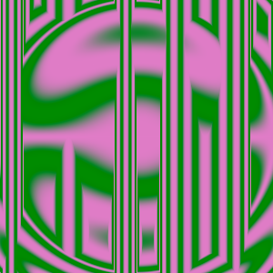
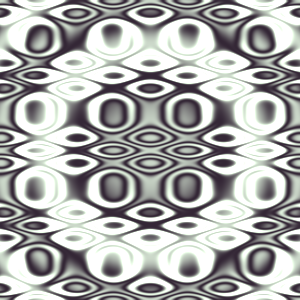
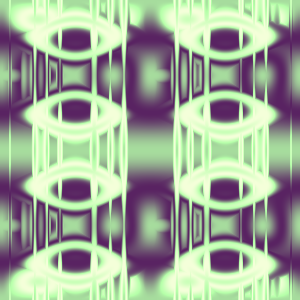
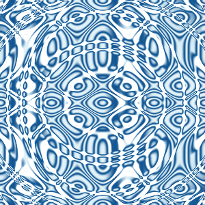